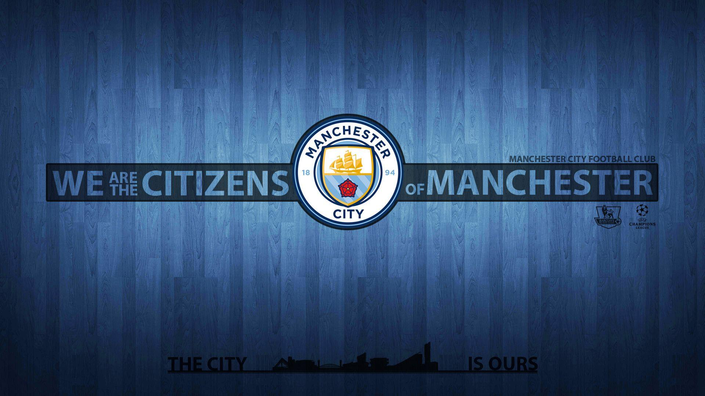
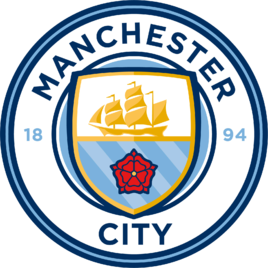
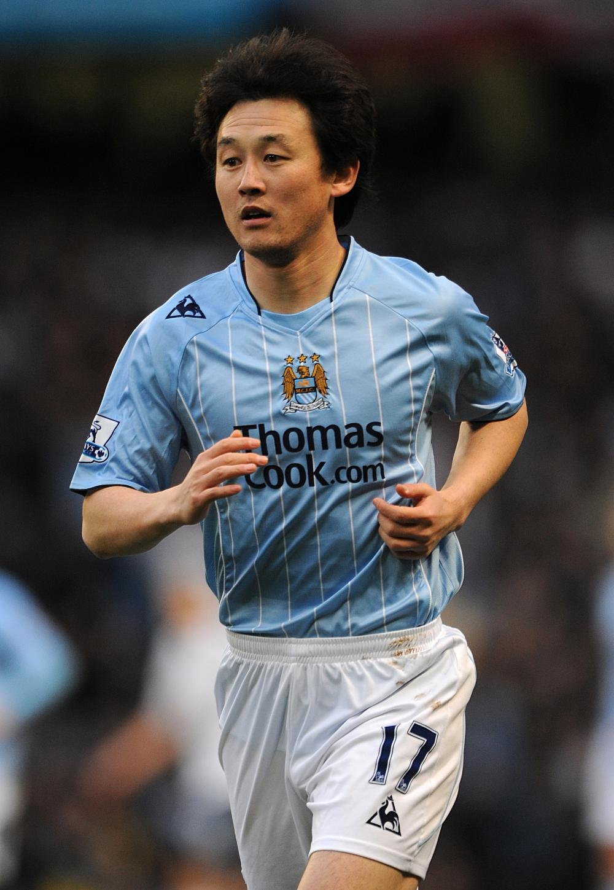
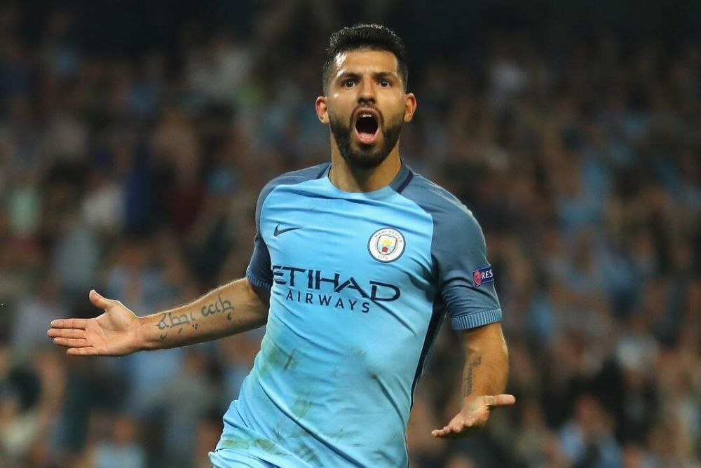

|  | |||||
| 宿舍首页 | 首页 | 队员 | 历史 | 荣誉奖项 | 青训成果 |
Manchester City Football Team
|
|||||
|---|---|---|---|---|---|
| 曼彻斯特城足球俱乐部（Manchester City F.C.），简称“曼城”，绰号“蓝月亮”，是一家位于英国曼彻斯特的足球俱乐部；前身为成立于1880年的“圣马可堂”，1887年改名为阿德维克，1894年更为现名。 |
| 古早时期 |
| 1880年，圣马克教堂成立一支朝气队，后来这支球队演变成曼城足球俱乐部。1884年，所知最早的‘曼城球衣’诞生，球衣主体为黑色，带有马尔他式交叉图案。一些人说这是因为俱乐部在1880年代与共济会的紧密联系，而另一些人则说白色的交叉表示与圣马克仍有密切的关系。 |
| 1892年，英格兰乙级联赛成立，阿德威克竞技足球俱乐部是创始会员俱乐部之一。1894年，阿德威克竞技足球俱乐部重组成曼城足球俱乐部，以代表整个城市。1899年，曼城荣获乙级联赛冠军，成为第一支获得自动晋级球队。1904年，在水晶宫球场，蓝月亮在足总杯决赛中击败博尔顿，成为第一支赢得重要奖杯的曼彻斯特球队。 |
| 1914年至1918年，由于处在第一次世界大战期间，英格兰的足球联赛暂停， 但各地区仍然有地区级锦标赛，曼城参加的是兰卡斯特郡联赛。 |
1926年，对于蓝月亮这是一个神魂颠倒的赛季，没有主帅的曼城成为曼彻斯特第一个在温布利进行比赛的球队（足总杯亚军），曼城德比历史上最大比分胜利（老特拉福德6比1胜曼联），但也是同一赛季遭到降级。
1928年，曼城以乙级联赛冠军晋级，并成为英格兰足球联赛中拥有最多球迷的俱乐部。1934年，在1932-33赛季输掉足总杯决赛后，曼城在1933-34赛季以2比1的比分击败朴茨茅斯捧起足总杯。
1934年，蓝月亮在缅因路对斯托克城的比赛吸引了周边84569名球迷到场观看，而这次观看人数成为缅因路球场最多观众的纪录。1937年，曼城第一次赢得英格兰联赛冠军。
1939至1945年，第二次世界大战期间，一个战时足球联赛成立。曼城参加北部联赛。老特拉福德球场的严重损害意味着曼联不得不在缅因路进行主场比赛。但是当这两支球队相遇时，曼城从来不允许曼联使用主队更衣室。
1947年，曼城以乙级联赛冠军晋级至甲级联赛。1949年，曼城足球俱乐部官方球迷俱乐部成立。 |
| 1965年，曼城的新队徽发布，以曼彻斯特市徽为其中心。1966年，在乔·莫泽教练团队的带领下，曼城以乙级联赛冠军身份晋级。1968年，蓝月亮在赛季最后一天击败纽卡联，第二次成为英格兰联赛冠军。1969年，曼城在温布利大球场1比0击败莱斯特城，赢得该赛季的足总杯冠军。1970年，曼城赢得欧洲优胜者杯和英格兰联赛杯，成为欧洲和国内联赛杯双料冠军。 |
| 英超时期 | |
| 1994年，曼城告别球迷无比热爱的基帕克斯看台，英国新法律禁止英超联赛球场阶梯站立式看台，曼城被迫更换了球队驻扎球场。而这个基帕克斯看台曾是英国最大的站立看台。 | |
| 1995/96赛季，这是一个动荡的赛季，曼城前后任命的三位主帅，分别是阿兰·伯尔，史蒂夫·考普尔和弗兰克·克拉克，当然还有代理主帅阿萨·哈特福德和菲尔·尼尔。球队也因此受到影响，并由于联赛排名末位从英超联赛中降级。 | |
| 2002年2月26日，孙继海正式以200万英镑的转会费加盟，创亚洲球员转会纪录。 |  |
| 2009/10赛季，有大财团注资的曼城在转会市场重开后继续其大肆收购，用了超过一亿英镑分别买入维拉队长加雷斯·巴里及纽卡斯尔门将谢伊·吉文，布莱克本前锋罗克·圣克鲁斯，埃弗顿后防乔莱昂·莱斯科特，自由身的西尔维尼奥。在2009/10赛季第一场赛事，曼城轻松以2比0作客胜布莱克本，更在季中的友谊赛中1比0击败欧冠冠军巴塞罗那。但在赛季中期，由于休斯带领球队战绩不佳，球队将其解聘，前国际米兰主帅罗伯托·曼奇尼开始执掌曼城教鞭。上任之初，曼奇尼就定下了冲入联赛前四，下赛季冲冠的目标。不过在主场0-1负于热刺之后，最终排名第5的曼城无缘2010/11赛季的欧冠资格。 | |
| 2014/15赛季，在曼城与南安普敦的最后一场比赛上，塞尔吉奥·阿奎罗为曼城打入1球，最终以26球夺得英超金靴奖，比射手榜第2的哈里·凯恩多出5球。单赛季打进26个联赛进球，阿圭罗创造了职业生涯的新高，这也是其职业生涯首次在顶级联赛上荣膺金靴奖。有阿根廷射手荣膺英超金靴奖是在2010/11赛季，当时由同为曼城队友的特维斯和曼联的贝尔巴托夫都打进20球，分享金靴奖。 |  |